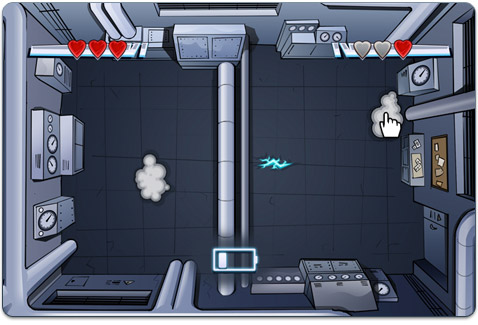

15 |
Progression du jeu |
 |
|
Vérifier votre progression
Pour voir votre nombre de points de réputation (Reputation Points), votre classement (Rank) et le nombre de pièces indice (Hint Coins) en votre possession, ouvrez Agent/Journal dans le menu du téléphone ACME (ACME Phone).
L’affaire va vraiment se compliquer, il peut donc s'avérer fort utile de garder une trace de ce que vous avez trouvé pendant votre enquête. Vous pouvez revoir tout ce que vous avez fait dans l’onglet Journal.
Consultez l'onglet Messages pour les écouter à nouveau.
Se rapprocher du bandit
Si vous voulez attraper ce bandit, vous devrez tout savoir sur lui. L’onglet Information, dans Mandat (Warrant) du menu du téléphone ACME (ACME Phone), contient des informations sur chacun des sous-fifres de V.I.L.E, l'organisation de Carmen Sandiego. Placez le curseur sur un bandit et appuyez sur
L’onglet Indices (Clues) contient les indices que vous avez trouvés sur le bandit. Avant de pouvoir produire un mandat d’arrêt, vous devrez utiliser les indices pour déterminer de quel bandit il s’agit. Le bandit a semé trois indices à travers le monde, qui vous aideront à déterminer son identité.
Lorsque vous aurez les trois indices, vous devrez sélectionner le bandit incriminé dans la liste d’images. Placez ensuite le curseur sur l’onglet Appliquer (Apply) et appuyez sur
Attraper le bandit
Finalement, vous avez réussi à trouver ce bandit!

Mais un mandat d’arrêt ne signifie pas que le bandit va se rendre sans résistance!
Pour échapper aux foudres du bandit, placez le curseur vers l’écran.
Utilisez votre bouclier ACME (ACME Shield) pour faire rebondir les foudres jusqu’aux nuages. Assurez-vous bien que la batterie de votre bouclier est chargée!
Pour utiliser votre bouclier ACME (ACME Shield), appuyez sur |
 |
 |
 |